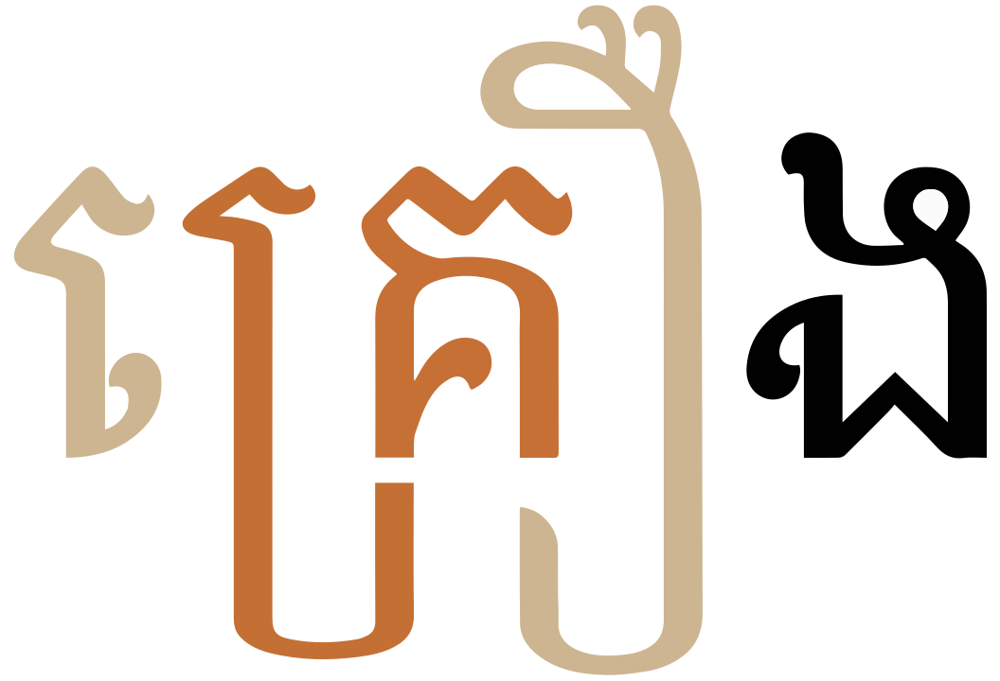

This page brings together basic information about the Khmer script and its use for the Cambodian language. It aims to provide a brief, descriptive summary of the modern, printed orthography and typographic features, and to advise how to write Cambodian using Unicode.
The Khmer script is used for writing the official language of Cambodia, and sometimes for Cambodian minority languages, such as Tampuan, Krung, Cham, Brao and Mnong. It is currently in widespread use, although it is estimated that 35% of the Khmer-speaking population aged 15 and over are illiterate in the script. It is also used to write Pali in the Buddhist liturgy of Cambodia and Thailand.
អក្សរខ្មែរʔaʔsɑː kʰmaːeKhmer script
The script is thought to be descended from the Brahmi Pallava script, and the Khmer literary tradition dates back to the 7th century. The modern Khmer script differs somewhat from precedent forms seen on the inscriptions of the ruins of Angkor. The Thai and Lao scripts are descended from an older form of the Khmer script.
The script is an abugida, ie. like most Brahmi-influenced scripts, each consonant carries with it an inherent vowel. See the table to the right for a brief overview of features for the modern Khmer orthography.
Khmer text runs left to right in horizontal lines. Words are not separated by spaces, however words may be separated by ZWSP. Spaces are used as phrase separators.
Each onset consonant is associated with a high or low class related to pronunciation (there is no tone). Khmer has more vowel sounds than ways to write them, so the choice of consonant class indicates different sounds for the same written vowel. Other factors may also affect the sound, such as stress, vowel harmony, and diacritics.
Word-internal clusters are very common at the beginning of a word, but clusters also occur medially in multisyllable words, and occasionally at the end of a word (though the 2nd consonant at the word end is usually not pronounced). Clusters are indicated by stacked consonants. Subjoined forms are created using an invisible coeng character. Stacks do not span word boundaries.
Word-final consonant sounds (typically 8 consonants and characters) use ordinary code points without an inherent vowel. Because there are no spaces or other word dividers, it is difficult to detect boundaries algorithmically. Two word-final sounds (m and h) can be produced using combining marks.
The Khmer orthography is an abugida with 2 inherent vowels (for example, using the two symbols for the sound k, ក is kɑːneck, and គ is kɔːmute).
Other post-consonant vowels are written using 21 vowel sign or other combining marks and 2 glide consonant letters. Two additional diacritics are used to change the register of a syllable.
Khmer has more vowel sounds than ways to write them. Therefore, a written vowel can have different pronunciations, depending on the class of the base consonant. (There is no tone in Khmer, so classes are specially designed for vowel selection.) Additional factors include whether this is an unstressed vowel, vowel harmony, and whether any of the special diacritics have been used to change the sound. For an in-depth treatment of pronunciation see Huffman in the sources section.
There are 3 pre-base glyphs and 5 circumgraphs, 2 of which can decompose into multipart vowels. This page lists 15 multipart vowels (made from 9 vowel signs, and 8 consonants/diacritics), not counting decompositions. Multipart vowels can involve up to 3 glyphs, but only surround the base consonant(s) on 2 sides, eg.កោះkoh̽
Standalone vowel sounds are typically written using vowel signs applied to 17A2, but there is also an incomplete set of independent vowels.
Modern Khmer has a number of distinct font styles, including slanted (called អក្សរច្រៀង), which has an upright variant, and round (called អក្សរឈរ). The round style includes more ligated forms. The upright style is used here.
Many native Cambodian words are monosyllabic. `Khmer also has many bisyllabic words, in which the first syllable is typically unstressed, and the vowel is rendered in colloquial speech as a schwa. Some bisyllabic words are compounds, however, and this may not apply.
Syllables start with one or more consonants or an independent vowel, however the latter represent a vowel sound after a glottal stop, so the syllable onset is always C(C)(C)V. The rhyme is composed of a short vowel in stressed syllables that is always followed by a consonant (VC), or a long vowel, that may not be.
Many monosyllabic words begin with consonant clusters, and some monosyllabic words end with clusters, although only one consonant is pronounced in syllable final position.
Word-internally, a syllable with a final consonant followed by another syllable creates a stack of consonants. The top item in the stack is the syllable final consonant, and the initial consonant of the next syllable is rendered in subjoined form.
Polysyllabic words are usually of Sanskrit, Pali or French origin. These words tend to alternate stress across their syllables, but may not.
Orthographic syllables
An orthographic syllable differs from a phonetic syllable in that it always begins with a consonant, or cluster of consonants. Where word-medial stacks occur, the orthographic syllable may begin with the final consonant of the previous phonetic syllable and continue through the onset(s) of the following syllable. Alternatively, an orthographic syllable may be just a final consonant (or consonant cluster) in a phonetic syllable.
The same word, split into phonetic syllables (left) and orthgraphic syllables (right).
An orthographic syllable includes all the combining characters associated with the consonants it contains.
Vowels
Dashes are used to indicate whether the character represents a vowel sound in a closed or an open syllable.
Vowel summary table
The following table summarises the main vowel to character assigments.
ⓘ represents the inherent vowel. Vowels in the left column show pronunciations after a-class consonants, and the column to its right shows use for o-class consonants. The right-hand column shows standalone vowels.
Cambodian inherited a writing system that has more vowel sounds than ways to write them, but has fewer consonant sounds than consonant symbols. Khmer takes advantage of this by dividing the consonant symbols into 2 classes (or registers): an a-class and an o-class. The class of a consonant then determines the vowel sound in a syllable. For example, compare the pronunciations in the table:
A-class consonant
IPA
O-class consonant
IPA
1780
kɑː
1782
kɔː
1780 17B8
kəj
1782 17B8
kiː
1780 17B6
kaː
1782 17B6
kiə
Examples of vowel pronunciation changes, depending on the class of the base consonant.
Other factors may also affect the sound, such as stress, and vowel harmony. Diacritics can also be used to change the class of a consonant, or create sequences that represent a class for which there isn't a single character (see register_change).
These registers are not related to tone, as Khmer is not tonal.
Vowel harmony
In two-syllable words, where the second syllable begins with one of the following sonorant consonants the vowel class of the second syllable is the same as that of the first.
ង␣ញ␣ណ␣ន␣ម␣យ␣ឡ␣ល␣រ␣វ
For example, in the following word the second syllable starts with an o-class consonant but the class of the preceding syllable turns the vowel to an a-class sound. There are, however, exceptions to this rule.
ប្រយ័ត្ន
Inherent vowels
ក
kɑːU+1780 KHMER LETTER KA
គ
kɔːU+1782 KHMER LETTER KO
Khmer has 2 inherent vowels: ɑː and ɔː. Both are commonly transcribed as a.
The class of the consonant will initially dictate which sound is appropriate, eg. 1780 (an ɑː class consonant) is pronounced kɑː whereas 1782 (an ɔː class consonant) is pronounced kɔː, but see also vowel_harmony.
The invisible characters
឴U+17B4 KHMER VOWEL INHERENT AQ
and
឵U+17B5 KHMER VOWEL INHERENT AA
were originally intended to represent a phonetic difference not expressed by the spelling, so as to assist in phonetic sorting, however, the Unicode Standard considers them insufficient for that purpose and errors in the encoding, and they should not be used.u,677
Other vowels following consonants
Post-consonant vowels are written using 21 vowel sign or other combining marks and 2 glide consonant letters. Two additional diacritics are used to change the register of a syllable.
Khmer has more vowel sounds than ways to write them. Therefore, a written vowel can have different pronunciations, depending on the class of the base consonant. (There is no tone in Khmer, so classes are specially designed for vowel selection.) Additional factors include whether this is an unstressed vowel, vowel harmony, and whether any of the special diacritics have been used to change the sound. For an in-depth treatment of pronunciation see Huffman in the sources section.
There are 3 pre-base glyphs and 5 circumgraphs, 2 of which can decompose into multipart vowels. This page lists 15 multipart vowels (made from 9 vowel signs, and 8 consonants/diacritics), not counting decompositions. Multipart vowels can involve up to 3 glyphs, but only surround the base consonant(s) on 2 sides.
In the âksâr mul font style, some vowel signs form ligatures with their base consonants. See vowel_ligatures.
Ten vowel signs are spacing marks, meaning that they consume horizontal space when added to a base consonant. The reahmuk described below is also a spacing mark.
An orthography that uses vowel signs is different from one that uses simple diacritics or letters for vowels in that the vowel signs are generally attached to the orthographic syllable, rather than just applied to the letter of the immediately preceding consonant. For example, pre-base vowel sign components are rendered before a whole consonant cluster if that cluster is rendered as a conjunct (see prebase).
Plain vowels
The pronunciation of vowel signs depends on whether they follow an a-class consonant or an o-class consonant. In some cases the alternative may be a diphthong, so compare this also with the items in diphthongsz. Additional variations can arise from context or whether a syllable is open or closed. For more detailed information, click on the characters in the panel, or see vowel_mappings.
As an example of how the same vowel sign is pronounced differently after an a-class and an o-class consonant, check out the pronunciations for 17B7 in the following word.
កិរិយា
The following panel lists basic monophthongs following a-class consonants.
ិ␣ុ␣ឹ␣័␣ៈ␣ា␣់␣៏
The next panel shows vowels following o-class consonants. In several cases the same vowel sign is used, but with a different pronunciation.
ិ␣ី␣ឹ␣ឺ␣ុ␣់␣ូ␣េ␣ោ␣ើ␣ែ
17C8 is a 20th century addition to the Khmer repertoire. It is used as a vowel after consonants that are pronounced as stressed syllables at the end of a word, or preceding an internal juncture in compounds.
The following panel lists basic diphthongs following a-class consonants. In some cases the alternative may be a diphthong, so compare this also with the items in monophthongs.
ៀ␣ឿ␣េ␣ូ␣ី␣ឺ␣័␣ូវ␣ោ␣ែ␣ើ␣ៃ␣័យ␣ៅ
The next panel shows vowels following o-class consonants. In several cases the same vowel sign is used, but with a different pronunciation.
ា␣ៀ␣ឿ␣ៃ␣័យ␣ៅ␣ូវ␣ួ␣់␣ៈ␣័␣ា◌់␣័␣ា◌់␣ិយ␣័រ
Khmer diphthongs generally end with -j, -w, or ə, but there are a few others that don't. It is noteworthy, also, that not all diphthongs ending with -j or -w use យ or វ.
179A is usually silent in syllable-final position, but the combination 17D0 179A produces the sound ɔə.
ជ័រ
Nikahit and reahmuk
ំ␣ះ
The descendants of the anusvara and the visarga, 17C6 called និគ្គហិតniʔkəhət, and 17C7, called រះមុខreə̆hmuk, are regarded as vowels in Khmer, even though they represent the sounds -m and -h, respectively.
Used on their own, they can change the inherent vowel, affecting both the pronunciation and the meaning, eg. compare
ដមដំ
Nikahit can also follow vowel signs that would normally produce aː, and u/uː, and change their sound value. The following example shows its effect on the vowel sign 17B6u,643:
ពាមពាំ
The following panel lists rhymes following a-class consonants.
ិះ␣េះ␣ែះ␣ុះ␣ុំ␣ឹះ␣ើះ␣ះ␣ោះ␣ាំ␣ំ␣ាំង
The next panel shows rhymes following o-class consonants. In several cases the same vowel sign is used, but with a different pronunciation.
ិះ␣េះ␣ោះ␣ុះ␣ុំ␣ំ␣ះ␣ាំង␣ាំ
The 2 following sequences are regarded as letters in the Khmer alphabet. They are not encoded separately in Unicode (but they are named sequences).
ាំ␣ុំ
Vowel modifier marks
័␣់
17D0 is used in some Pali and Sanskrit loan words (although alternative spellings exist) and indicates that the syllable has a particular vowel (click on the character in the box for more details).
17CB is always placed above the final consonant, and basically shortens the preceding vowel.
ខាត់
Pre-base vowel signs
េ␣ែ␣ៃ
Three combining marks are displayed to the left of the onset consonant(s).
Two prebase vowels, each pronounced after a consonant but rendered to its left.show composition
កែងដៃ
Relative to the consonants, these combining marks are always typed and stored in the order in which they are pronounced, not the order in which they are displayed. The positioning of the glyph when displayed is managed by the font and rendering software.
In fact, these vowel signs appear before the start of the orthographic syllable. When a syllable onset is a consonant cluster, the vowel sign appears to the left of the initial character in the consonant stack.
A prebase vowel, pronounced after a consonant stack, but rendered to the left of the top character in the stack.show composition
អង្គ្លេស
Circumgraphs
ៀ␣ឿ␣ើ␣ោ␣ៅ
Five vowels are produced by a single combining character with visually separate parts, that appear on different (mostly opposite) sides of the consonant onset.
These are also combining marks that are always stored after the base consonant. The font places the glyphs in the right place relative to the base consonant.
Like the pre-base vowels, the components of a circumgraph vowel are arranged relative to a stack.

A circumgraph vowel sign surrounding both the k and the r after which it is pronounced.show composition
គ្រឿង
None of these circumgraphs decompose during normalisation. See also encoding.
Multipart vowels
Vowels represented by combinations of the above characters (not including decomposed versions of the 2 circumgraphs described below):
ាំ␣ុំ␣ុះ␣េះ␣ោះ␣ា␣ាំង␣ិះ␣ឹះ␣ូវ␣ើះ␣ែះ␣័រ␣ិយ␣័យShow which combinations contain a given character:
ា
ា់␣ាំង␣ាំ
ិ
ិយ␣ិះ
ឹ
ឹះ
ុ
ុះ␣ុំ
ូ
ូវ
ើ
ើះ
េ
េះ
ែ
ែះ
ោ
ោះ
ំ
ុំ␣ាំង␣ាំ
ះ
ោះ␣ិះ␣េះ␣ុះ␣ែះ␣ឹះ␣ើះ
់
ា់
័
័យ␣័រ
យ
ិយ␣័យ
ង
ាំង
រ
័រ
វ
ូវ
Show details about vowel glyph positioning.
The following list shows where vowel signs are positioned around a base consonant to produce vowels, and how many instances of that pattern there are. The figure after the + sign represents combinations of vowel sign and niʔkəhət/reə̆hmuk,
3 pre-base, eg. កេke
2+1 post-base, eg. កាkā
4+1 superscript, eg. កិki
3 subscript, eg. កុku
4+1 pre+post-base, eg. កោko
1+1 super+post-base, eg. កាំkām̽
0+1 super+subscript, ie. កុំkum̽
0+1 sub+post-base, ie. កុះkuh̽
0+1 pre+post+post-base, ie. កោះkoh̽
At maximum, vowel components can occur concurrently on 2 sides of the base.
Characters that don't appear in the combinations:
ី␣ឺ␣ួ␣ឿ␣ៀ␣ៃ␣ៈ␣ៅ
Standalone vowels
Most of the time, vowels that appear to be standalone are actually pronounced and written after a glottal stop. These use the consonant 17A2 for a-class vowels, or 17A2 17CA for o-class vowels. They are usually followed by a vowel sign, but when used alone they represent the sound of the inherent vowel, eg.
អូ
អ៊ូ
ចង្អូរ
The combination of 17A2 and a vowel sign can also occur as a subscript below a consonant onset or final consonant, eg.
ក្អាត់
ចង្អៀត
Independent vowels
Khmer also has independent vowel letters that can be used to represent some of these sounds, but unlike most South Asian scripts, there are fewer independent vowels than vowel sounds, and some do not have direct correspondences with a simple vowel sign. For example, 17AA corresponds phonetically to the multipart vowel 17A2 17BC 179C. (See also vocalics.)
ឥ␣ឦ␣ឪ␣ឧ␣ឩ␣ឯ␣ឰ␣ឱ␣ឳ␣ឲ
Whether a vowel sound is represented using an independent vowel letter or the glottal consonant plus vowel sign varies from word to word. In Cambodian orthography the two are not interchangeable. The independent vowel letters appear in relatively few words, but some of those words are quite common, eg.
ឪពុកឲ្យឮ
Other characters
The Unicode Khmer block contains 3 more independent vowels that are either obsolete or strongly deprecated.
ឨ
The Unicode Standard regards the following 2 characters as errors in the encoding.
ឣ␣ឤ
Vowel length
Vowel length is distinctive in Khmer. Short and long vowels are written using different vowel characters. For example, compare the long and short i vowel signs in the following word.
ហ្វ៊ីស៉ិក
Silent vowels & consonants
Inherent vowels are not pronounced after syllable final consonants.
Vowels are not pronounced between stacked consonants. The first character in the list below, 17D2, is used to create those consonant stacks. It is never visible when part of a cluster. (When rendered alone or without a following consonant, fonts do however apply a visible form.) See clusters.
Khmer also has other diacritics that silence vowels or parts of the text.
្␣៍␣៌␣៑␣៝
The following two diacritics are used to silence written characters.
17CD is used over a consonant, particularly in loan words, to silence it and any attached vowels or subscripts.
សប្ដាហ៍
រេហ៍ពល
កេរ្តិ៍
17CC is not very common and word-medially may produce rə before the consonant it sits on. When it appears word-finally, it may silence the final consonant (and may also affect vowel sounds).
បរិបូណ៌
17D1, the sanskrit virama, is sometimes used in Sanskrit words to indicate that a final consonant has no vowel sound.
អាត្មន៑
17DD, on the other hand, is a rarely used sign that indicates that a final consonant retains its inherent vowel sound.
(Check the detailed information for each of the above marks, since this section only looks at the use for silencing sounds.)
Vowel sounds mapped to characters
This section maps Cambodian vowel sounds to common graphemes in the Khmer orthography.
Sounds in the left-most column are produced after an a-class consonant; the middle column vowels are produced after an o-class consonant; and the right-hand column contains independent vowels. The dotted circle indicates the location of the consonant relative to the vowel sign; if there are 2 circles, the vowel is used only in closed syllables.
Click on a grapheme to find other mentions on this page (links appear at the bottom of the page). Click on the character name to see examples and for detailed descriptions of the character(s) shown.
Plain vowels
i
17B7 Followed by a glottal stop in stressed syllables, but not in unstressed.
និទាន លទ្ធិ
iː
17B8
ពីរ
17B7 1799
ឥន្ត្រិយ
ɨ
17B9
ទឹក
17B7 except before 1799.
ជិត
17C1 before palatals.
ពេញ
17A5
ឥន្ទុ
ɨː
17BA
គឺ
u
17BB Followed by a glottal stop in stressed syllables, but not in stressed.
វិទ្យុ គុលិកា
17BB
គុណ
17CB after an inherent, series 2 vowel and before a labial final.
ទប់
17A7
ឧបម៉ា
uː
17BC
គូ
17A9
ឩន
e
17B7 Followed by a glottal stop in stressed syllables, but not in unstressed.
មតិ កិរិយា
eː
17C1
គេ
o
17BB Followed by a glottal stop in stressed syllables, but not in unstressed.
វត្តុ កុមារ
17BB
ឧកញ៉ា
17A7
ឧកញ៉ា
oː
17C4
គោ
ə
17B7
ចិត្ត
17B9
ដឹក
17C1 before palatals.
ម៉េច
17A5
ឥត
əː
17BE
ឈើ
ɛː
17C2
គែ
ɔː
Inherent vowel
គ
a
17D0
ស័ក
17B6 25CC 17CB
កាត់
aː
17B6
តា
ɑ
17CB after an inherent, series 1 vowel.
កត់
ɑː
Inherent vowel
ក
Diphthongs and other combinations
iə
17B6
ជា
17C0
តៀប
17C0
ទៀប
ih
17B7 17C7
ជិះ
17C1 17C7
នេះ
ɨə
17BF
តឿ
17BF
ជឿ
ɨj
17D0 1799
ជ័យ
17C3
ព្រៃ
ɨw
17BC 179C
នូវ
17C5
ទៅ
uə
17BD
កួរ
17BD
គួរ
uə̆
17CB after an inherent, series 2 vowel and before a non-labial final.
យល់
uə̆h
17C4 17C7
គោះ
uh
17BB 17C7
ពុះ
um
17BB 17C6
ទុំ
17C6
ទំ
eə̆
17D0 before velar finals.
ល័ខ
17B6 25CC 17CB before velar finals.
ទាក់
ei
17C1
កេរ្តិ៍
eh
17B7 17C7
តិះដៀល
17C1 17C7
សេះ
17C2 17C7
កែះ
eə̆h
17C7
ទះ
eə̆ŋ
17B6 17C6 1784
ទាំង
ou
17BC
កូរ
17A9
ឩដ្ឋ
oə̆
17D0 before non-velar finals.
ទ័ព
17B6 25CC 17CB before non-velar finals.
គាត់
oə̆m
17B6 17C6.
ជាំ
oh
17BB 17C7.
ចុះ
om
17BB 17C6.
ដុំ
əɨ
17BA
ដឺ
əj
17B8
បី
17B7 1799
ចេតិយ
17A5
ឥឡូវ
17A6
ឦសាន
əw
17BC 179C
ត្រូវ
17AA
ឪពុក
əh
17B9 17C7
ឆ្កឹះ
17BE 17C7
ចង្កើះ (normally spelled ចង្កឹះcŋ͓kɨh̽).
ɔə
17D0 179A.
ជ័រ
ae
17C2
កែ
17AF
ឯ
aə
17BE
បើ
ao
17C4
កោរ
17A7
ឧបាសក
17B1
ឱប
17B2
ឲ្យ
aj
17D0 1799
សម័យ
17C3
ប្រៃ
17B0
ឰរាវ័ណ
aw
17C5
តៅ
17B3
ឳទក
ah
17C4 17C7
កោះ
17C7
តះ
am
17B6 17C6
ចាំ
ɑm
17C6
ចំ
ɑŋ
17B6 17C6 1784
តាំង
Vocalics
Khmer represents vocalics only as independent vowel letters.
ឫ␣ឬ␣ឭ␣ឮ
The following words shown examples of them in use.
ឫស
ឬស្សី
រំឭក
ស្ដាប់ឮ
Consonants
Consonant summary table
The following table summarises the main consonant to character assigments.
Consonants of the a-class register appear on the left, o-class on the right.
This shows consonants in use in modern Khmer, although some are not widely used. Whereas the table just above takes you from sounds to letters, the following simply lists the basic consonant letters.
Khmer is not tonal, but each consonant character belongs to one of two classes (see consonant_registers). The class of a consonant determines the vowel sound in a syllable, however this can also be changed (see register_change).
ɑ or ɔ indicates which register the consonant belongs to. Where pronunciation differs, forms such as p- indicate the sound at the start of a consonant cluster, and -p at the end of a syllable.
The following 3 consonants are obsolete, and used only for Pali/Sanskrit transliteration.
ឝ␣ឞ␣ៜ
Additional consonants
Special combinations are used to represent non-native sounds in loan words, especially from French and Thai. These include the following, most of which involve a stack beginning with ហ.
ប៉␣ហ្គ␣ហ្គ៊␣ហ្វ␣ហ្វ៊␣ហ្ស␣ហ្ស៊
Changing consonant registers
There are not enough individual Khmer consonant letters to be able to assign a unique character for each a-class and o-class register. Khmer extends the number of letters as follows to close this gap.
Two diacritics, 17C9 and 17CA, are used to change the class of a consonant. These are particularly useful when a given sound has only one character associated with it, such as the letters ម, យ and ស etc.
៉␣៊
These diacritics appear above the base consonant or stack by default, but if another combining mark (such as a vowel sign) appears above the base (for certain consonants) the register shifter may move below the base and looks identical to 17BB (see consonant_shift_posn).
Regardless of displayed position, each of these diacritics should be typed and stored immediately after the base character, unless a ZWNJ intervenes.u,647
A small number of o-class consonants are transformed into a-class consonants by preceding them with 17A0, rather than using the above diacritics. They include the following.
ហ្ម␣ហ្ន␣ហ្ល
Onsets
Word-initial consonant clusters are relatively common in Khmer. These include sounds commonly referred to as medials, such as -r and -l, but also a wider assortment of consonant clusters. For example:
ក្ដារ
ឆ្កែ
ធ្មេញ
ផ្សែង
The consonant clusters are written as stacks, using the coeng. See clusters.
In addition, Khmer creates syllable-initial stacks using 17A0 followed by another consonant to create sounds from other languages, or to change the register for the subjoined consonant. These combinations produce a single consonant sound, unlike the former examples, but they are handled using the normal stacking mechanism. See extendedC.
Finals
Not all Khmer consonants can appear in syllable-final position. The most common syllable codas include the following:
ប␣ត␣ក␣ម␣ន␣ញ␣ង␣ល
The pronunciation of the consonant in final position may differ from it's normal pronunciation, but it is not followed by a vowel sound.
Because ordinary letters are used in word-final position, and there are no indicators for syllable or word boundaries, it is difficult to parse Khmer or automatically generate pronunciation. For example, the following sequence could equally represent two syllables kɑːkɑː with inherent vowels, or one syllable with a final -k, pronounced kɑːʔ.
កក
Two final consonant sounds -m and -h can also be produced using combining characters. See nikahit_reahmuk for details.
Consonant clusters
In Khmer, word-internal clusters are very common at the beginning of a word, but clusters also occur medially in multisyllable words, and occasionally at the end of a word.
The absence of a vowel sound between two or more consonants is visually indicated by stacked consonants (only), where the non-initial consonant appears below the initial, typically with a different shape from normal.
In Unicode, the stacking behaviour is achieved by adding 17D2 between the consonants. This character has no visual representation in normal Khmer text, however most fonts render it as a small cross when used alone or without a following consonant. It is never visible when used in consonant clusters.
Word boundaries. Clusters do not span word boundaries. Consonant clusters formed by the end of one word and the beginning of the next do not lead to stacking in Khmer.
Stacking
្
Subscript consonant forms are called ជើងអក្សរ (or 'coeng', pronounced cəːŋ).
Cambodians see these subscripts as distinct letter forms, but, unlike Tibetan, they are produced in Unicode by inserting 17D2 before the consonant that will become a subscript. This character, which has no visual form in Cambodian, is called the coeng in Unicode, although it should rightly be called the coeng generator.
All the shapes are simplified and reduced in size compared to the non-subscript form. Many have significantly different shapes.
This list shows consonants in their normal and subjoined forms
179A produces a subjoined form that wraps to the left and under the preceding consonant. Several others wrap below and to the right of the consonant. 17A1 doesn't normally appear in subscript form.
Some subscripts change the sound of the preceding consonant.
Stacks commonly occur in multisyllabic words. A medial cluster will typically contain a final consonant for the first syllable and the initial consonant of the next syllable.
កម្មករ
Some clusters involve two subscripts. These are, with 3 exceptions, composed of a final nasal, followed by a stop and r.
កន្ត្រៃ
កញ្ជ្រេង
The 3 exceptions are loan words.
អង្គ្លេស
សងស្ក្រិត
សាស្ត្រាចារ្យ
Subscript consonants that appear at the end of a word, are silent.
ពេទ្យ
រដ្ឋ
Stacks and registers
Where the two consonants involved in the cluster are in different classes or registers, the pronunciation of any following vowel is normally determined by the register of the subscript consonant. For the following exceptions, however, the vowel pronunciation is determined by the register of the first consonant (all o-class):
ង␣ញ␣ន␣ម␣យ␣រ␣ល␣វ
Combining characters & stacks
Most vowels that are pronounced after a consonant stack are displayed as if they were attached to the consonant at the top of the stack (including pre-base vowel signs and circumgraphs).
Click on the examples to see the underlying sequence more clearly.
ក្លិន
ឆ្វេង
ភ្លៀង
This can also lead to ligation between the top consonant in the stack and a vowel sign, unless the subjoined consonant is right-spacing.
ក្ដារ
ក្រាក់
ក្បាល
The exceptions are the vowel signs that appear below the consonant; these appear below the last subjoined form, unless the subjoined form is left-spacing.
ខ្ពុរ
ត្រុំ
Other diacritics are treated in a similar fashion. This can lead to ambiguity if a diacritic could modify either consonant in a stack.
Subscript consonants after vowels
It is rare but possible to find subscripts used after independent vowels. One common word spelled this way is ឲ្យ
It is also possible to find subscript forms of independent vowels. Four of these are named sequences in Unicode.
Consonant sounds to characters
This section maps Cambodian consonant sounds to common graphemes in the Khmer orthography.
When a row has two columns, the left is an ɑ-register consonant (class 1), and the right is an ɔ-register consonant (class 2).
A consonant followed by a coeng indicates that this different sound is produced when it is followed by a subjoined consonant.
Click on the character name to see examples and for detailed descriptions of the character(s) shown. Sounds listed as 'infrequent' are allophones, or sounds used for foreign words, etc.
Onset stops
p
1796 17C9
ព៉ី
1796
ពី
1794 in some words by convention
បច្ច័យ
1794 17C9
ប៉ា
1794 17D2
ប្រយ័ត្ន
1795 17D2
ផ្សារ
1797 17D2
ភ្នែក
ɓ
1794
ប្រុត
1794 17CA
ប៊ុត
t
178F
តា
1791
ទា
178B 17D2
1792 17D2
ធ្មេញ
ɗ
178A
ដុន
178C Rare and only used in a few words of Pali or Sanskrit origin.
ឌុន
178F at the beginning of two-syllable words where the first syllable ends with final nasal.
តង្វាយ
c
1785
ចា
1787
ជា
k
1780
ក
1782
គ
1781 17D2
ខ្ពុរ
1783 17D2
ឃត់
ɡ
17A0 17D2 1782 for loan words.
ហ្គាស
17A0 17D2 1782 17CA for loan words.
ហ្គ៊ារ
ʔ
17A2
អង្កាល់
17A2 17CA
អ៊ី
Aspirated stops
pʰ
1795
ផាយ
1797
ភាយ
tʰ
1790
ថូ
178B Only used in a few words of Pali or Sanskrit origin.
ឋាន
1792
ធូរ
178D Only used in a few words of Pali or Sanskrit origin.
ឍាល
cʰ
1786
ឆោង
1788
ឈ្លើង
kʰ
1781
ខត់
1783
ឃត់
1780 17D2 when followed by a subscript 1798, 1793, or 179B.
ក្មេង
1782 17D2 when followed by a subscript 1798, or 1793.
គ្នា
Onset fricatives
f
17A0 17D2 179C
ហ្វឹក
17A0 17D2 179C 17CA
ហ្វ៊ីស៉ិក
ʋ
179C 17C9
វ៉ៃ
17A0 17D2 179C
ហ្វូង
179C
វៃ
s
179F
សី
179F 17CA
ស៊ី
ʒ z
17A0 17D2 179F
ភីហ្សា
17A0 17D2 179F 17CA
ហ្ស៊ីប
h
17A0
ហាង
17A0 17CA
ហ៊ាន
Onset nasals
m
1798 17C9
ម៉ែ
17A0 17D2 1798
ហ្មត់
1798
មែ
n
178E
ណាយ
17A0 17D2 1793
ហ្នឹង
1793
នាយ
ɲ
1789 17C9
ញ៉ាំ
1789
ញាំ
ŋ
1784 17C9
ង៉ាវ
1784
ងាវ
Onset other
r
179A 17C9
រ៉ូង
179A
l
17A1
ឡេង
17A0 17D2 179B in some words.
ហ្លួង
179B
លាង
j
1799 17C9
យ៉ាង
1799
យាង
Vocalics
rɨ
17AB
ឫស
rɨː
17AC
ឬស្សី
lɨ
17AD
រំឭក
lɨː
17AE
ឮ
Final stops
p
1796
ភាព
1797
លោភ
1794
រៀប
1795 Not common.
t
178F
កាត់
1791
បាទ
178A
ប្រាកដ
178B
បាឋ
178A 17D2 178B
ឥដ្ឋ
178C
គ្រុឌ
1790
ប្រមាថ
1792
អាវុធ
178D
អាសាឍ
c
1785
តូច
1787
រាជ
k
1780
ជីក
1782
រោគ
1781
មុខ
1783 Not common.
មេឃ
ʔ
All of the following occur after one of the following vowels: a, aː, ɑ, ɑː, eə̆, uə̆, iə, ɨə, uə.
1780
នាគ
1782
នាគ
1781
ពិសាខ
1783
មាឃ
Final fricatives
h
179F
ចាស់
17C7 This represents -ah after a 1st class consonant, and -eə̆h after a 2nd class consonant.
ទះ
Final nasals
m
1798
តាម
17BB 17C6
ដុំ
17C6
ចំ
17B6 17C6
ចាំ
n
1793
មាន
178E
បូរាណ
ɲ
1789
ទាញ
ŋ
1784
ដឹង
1789 after iː.
រីញ
Final other
w
179C when it appears in the syllable coda as a final glide.
អាវ
17C5
ហៅ
l
179B
កាល
j
1799
បាយ
17C3
ព្រៃ
Encoding choices
In some fonts, two circumgraphs look the same whether they are written as a single character, or as two.
Recommended
Not recommended
17BE
17C1 17B8
17C4
17C1 17B6
For Khmer, single and multiple code point realisations do not normalise to be the same in NFC or NFD, so you are creating different content by using one approach or the other. This may affect various operations on the text, and it is therefore better to stick with one representation. The Unicode Standard surprisingly makes no comment on this, although it does for other scripts, where it encourages use of the precomposed, single code point.
Also, some fonts may not display the decomposed sequences correctly.
Inherent vowel letters
The invisible characters 17B4 and 17B5 were originally intended to represent a phonetic difference not expressed by the spelling, so as to assist in phonetic sorting, however, the Unicode Standard considers them insufficient for that purpose and errors in the encoding, and they should not be used.u,677
Codepoint sequences
Components of an orthographic syllable should be composed in the following order:
base consonant or independent vowel
rɔɓaːt
museʔkətoə̯n or trəisaɓ (register shifters)
subscript (consonant or independent vowel)
vowel sign
zero-width joiner or non-joiner
any other mark
This fixed ordering makes it easier to search for and collate text. For more details, see this SIL document.sil
Numbers, dates, currency, etc.
Khmer has its own set of decimal digits, although western digits are also used sometimes.
០␣១␣២␣៣␣៤␣៥␣៦␣៧␣៨␣៩
The thousands separator is ., and decimal separator is ,.
Ranges and dates use the ASCII hyphen.ws,#Spacing_and_punctuation
Currency
៛
The symbol 17DB (សញ្ញារៀលsɲ͓ɲāṟiᵊḻsaɲ ɲaː riəl) is placed after the amount, eg. ៣.០០០ ៛ɓej poan riəl3,000 riel. Sometimes 179A is used instead.
Other
The Unicode Khmer block contains a set of numeric symbols for divination lore.
៰␣៱␣៲␣៳␣៴␣៵␣៶␣៷␣៸␣៹
Use of 17D3 is discouraged in favor of the complete set of lunar date symbols.
The Khmer Symbols block is entirely composed of Lunar date symbols.
Modern Khmer has several distinct styles of font, each of which is used for different purposes.
Most modern typefaces are set in an upright style (called អក្សរឈរʔk͓sṟc̱ʰṟʔɑːksɑː cʰɔː or អក្សរត្រង់ʔk͓sṟt͓ṟŋ˘ʔɑːksɑː trɑŋ).ws,#Styles This is the style used for this page.
Text in an âksâr chôr font style.
A slanted style (អក្សរជ្រៀងʔk͓sṟc̱͓ṟiᵊŋʔɑːksɑː criəŋ) is sometimes used for whole documents or novels. The oblique styling has no affect on the semantics of the text.ws,#Styles
The same text in an âksâr chriĕng font style.
The round style (អក្សរមូលʔk͓sṟm̱ūḻʔɑːksɑː muːl) has heavier, more rounded letter shapes, and includes more ligated forms. It is commonly used for titles and headings in Cambodian documents, books, or currency, as well as on shop signs or banners. It may also be used to emphasise important names or nouns.ws,#Styles The regular font weight looks like bolded text in comparison to the upright font style.
The same text in an âksâr mul font style.
Another style (អក្សរខមʔk͓sṟkʰm̱ʔɑːksɑː kʰɑːm), characterized by sharper serifs and angles and retention of some antique characteristics, is used for yantra text in Cambodia as well as in Thailand.ws,#Styles
An example of a page that mixes upright (regular and bold) with mul font styles. (Click on the image to see bigger.)
Context-based shaping & positioning
This section mentions a handful of exceptions to the general rule that there is very little in the way of interaction between characters other than where the subscript shapes are used after the coeng generator.
Subjoined consonants can be quite different shapes from those of the corresponding base consonant, and those shapes can be seen in clusters. However, some additional reshaping of glyphs is needed to cope with stacking of characters. Compare for example the length of the final element fig_long_subjoined_yo.
The subjoined form of 1799 is lengthened when it is the second subjoined consonant.
Glyph order
Although all combining characters follow the base in memory, the visual order of syllable components may not follow a linear progression from left to right. In the following example the order in which the glyphs are pronounced is far left, far right, down, left, left: កន្ត្រៃ In the word ច្រៀង the spoken order of the separate visible parts, numbered left to right, is 3,2, 1+4, 5, Some vowel signs span two or three sides of the base consonant or cluster.
Joining forms for AA
Some small joining features occur in relation to 17B6 and similarly shaped vowels. Unicode provides the following list of common forms:
ក + ា = កា
ប + ា = បា (avoids confusion with ហ )
ប + ៅ = បៅ
្ស + ា = ្សា
Register-shifter position
The function of the register-shifter marks is described in register_change.
When 17C9museʔkətoə̯n or 17CAtrəisaɓ appears with a vowel sign above the consonant, the
ក្បៀសក្រោមkɓiəhkraom
form may be used. This looks exactly like 17BB.
See fig_posn_muse.
Alternative positions and shapes of MUUSIKATOAN.show composition
Alternative positions and shapes of TRIISAP.show composition
អ៊ូ
show composition
អ៊ី
The Unicode Standardu,647 gives the impression that both of these diacritics are moved below the consonant any time a vowel appears over that consonant. However, in reality only certain consonants cause this behaviour. The behaviour varies a little by font, but in general the MUUSIKATOAN diacritic is lowered for the following letters:
If needed, this behaviour can be modified using 200C, if the font recognises it, to prevent the low form appearing. The ZWNJ must be typed and stored between the base consonant and the register-shifter. See fig_zwnj_triisap for an example using ប្រតឺងអ៊ឹះ.
TRIISAP rendered above the consonant by using ZWNJ immediately before it (left), when it would otherwise be moved below the consonant (right).show composition
ប្រតឺងអ៊ឹះ
Observation: Textarea entry fields on the Mac don't seem to recognise the ZWNJ character (mentioned below) and incorrectly display the combining characters that follow it. The text looks ok if the browser displays the sequence as part of the HTML.
NYO with subscripts
Another common feature is that ញ drops the swash below the baseline when followed by a subscript consonant.
The normal, full shape of NYO (left), and the reduced shape when a subjoined consonant follows (right).show composition
ឃើញ
show composition
បញ្ជី
Also, when it appears as a subscript under itself it uses a special full form subscript (see fig_nyo_subj).
The normal subjoined shape of NYO (left), and the special shape when gemination causes it to be subjoined below itself (right).show composition
ប្រាជ្ញា
show composition
កញ្ញា
Vowel ligatures
In the âksâr mul style, some vowel signs ligate with the consonant characters to which they are applied. See the word វិទូ in fig_vowel_ligatures.
The sound vi written as a ligature (left) and with no ligature (right) in the âksâr mul style.show composition
វិទូ
Observation: This behaviour is font dependent. For example, the Khmer Mool font (used for the figure), and Khmer OS Muol produce the ligation, but the Khmer Ratanakiri font does not.
To prevent a ligature forming, use 200C (ZWNJ) between the consonant and the vowel. To cause a ligature to form when there isn't one, if the font has the appropriate rules, use 200D (ZWJ) instead.u,647
Managing glyph shaping
Content authors can use 200C and 200D to change the position of register shifters (see consonant_shift_posn), and to manage ligatures in mul fonts (see vowel_ligatures).
Typographic units
Word boundaries
Khmer words are not separated by spaces, nevertheless Khmer should be wrapped at word boundaries.
Sometimes 200B may be used to indicate appropriate break-points.
Some other languages that use the Khmer script, such as Krung and Tampuan, do separate words with narrow spaces such as 2006,
and separate phrases with a wider space such as 2003.sil,5
Names
- (called សហសញ្ញាsɑːhɑː sɑːɲɲiə) is used between the parts of a person's name. Typically the family name (written first) and following names, but often all names for Chinese Cambodians, eg.
ញ៉ុក-ថែមɲok tʰaem
លី-ធាម-តេងliː tʰiəm teiŋ
Graphemes
This section is still undergoing research and development.
Grapheme clusters alone are not sufficient to represent typographic units in Khmer. Conjunct stacks are common and must not be split apart by edit operations that visually change the text (such as letter-spacing, first-letter highlighting, and in-word line breaking). For those operations one needs to segment the text using orthographic syllables, which string grapheme clusters together with an invisible stack generator. This character is never visible, so Khmer doesn't have the problems of ambiguity that affect various other Brahmi-derived scripts.
The Khmer stack former (coeng) is 17D2, which has an Indic Syllabic Category of Invisible_Stacker.
Grapheme clusters
Base ZW(N)J? Combining_mark*
This fixed ordering makes it easier to search for and collate text. For more details, see this SIL document.sil
Combining marks may include zero or more of the following types of character.
Final consonant marks [2] (see nikahit_reahmuk) One of 2 possible combining marks, at the end of a grapheme cluster sequence. (Cambodians consider these to be vowels.)
Coeng generator [1] (see subscript_consonants) Normally occurs immediately after a consonant at the beginning of a cluster. It sometimes also appears after an independent vowel.
In some cases, a ZWNJ is inserted between a consonant and a consonant shifter in order to specify special shaping rules for the shifter (see consonant_shift_posn).
To prevent or encourage the formation of ligatures (especially for mul fonts) a ZWNJ or ZWJ can be inserted between a consonant and following dependent vowel (see vowel_ligatures).
The following examples show a variety of grapheme clusters:
Click on the text version of these words to see more detail about the composition.
បរិបូណ៌
ប៉ាន
នុ៎ះន៎
ចង្អូរ
កញ្ជ្រេង
ប្រតឺងអ៊ឹះ
The last syllable of the last item in the list contains a ZWNJ (to keep the register shifter above the base).
Note how grapheme clusters segment the parts of a conjunct after the virama. This is not always desirable (see orthographicS just below).
Larger typographic units
(Consonant Coeng)* Grapheme_cluster
Khmer commonly stacks glyphs, to form conjuncts (see clusters). These conjuncts represent consonant clusters or gemination. The stacking does not occur across word boundaries; only within words.
Grapheme clusters terminate after a sequence of marks that includes a coeng indicator code point, but editorial operations that change the visual appearance of the text, such as letter-spacing, first-letter highlighting, line-breaking, and justification, should never split stacked forms apart. For this reason, an alternative way of segmenting graphemes is needed. This may not apply, however, for some other operations such as cursor movement or backwards delete.
Where stacks appear, a typographic unit contains multiple grapheme clusters. The non-final grapheme clusters all end with 17D2, which is never visible, and the final grapheme cluster begins with a consonant.
The following are examples. Some of these examples were shown in the previous section: here the stack is treated as a single typographic unit.
Click on the text version of these words to see more detail about the composition.
ចង្អូរ
កញ្ជ្រេង
អភិវឌ្ឍ
ភ្លៀង
Browser behaviour
Test in your browser.The words test units that equate to grapheme clusters only, and others that include conjuncts. First, the text is displayed in a contenteditable paragraph, then in a textarea. Results are reported for Gecko (Firefox), Blink (Chrome), and WebKit (Safari) on a Mac.
បរិបូណ៌ប៉ានចង្អូរកញ្ជ្រេងឲ្យប្រតឺងអ៊ឹះ
Cursor movement.Move the cursor through the text.
Gecko and Blink step through the text using grapheme clusters. It takes 2 or more steps (depending on the number of GCs) to get through the stacks, one grapheme cluster at a time. In some cases the cursor may look as if it is not moving. WebKit steps through all words using the orthographic syllables as described here (ie. they step over a stack and all associated combining characters in one jump), except that WebKit treats the ZWNJ as the start of a new grapheme cluster, requiring an extra jump to get past it.
Selection.Place the cursor next to a character and hold down shift while pressing an arrow key.
The behaviour is the same as for cursor movement.
Deletion. Forward deletion works in the same way as cursor movement. The backspace key deletes code point by code point, for all browsers.
Line-break.See this test. The CSS sets the value of the line-break property to anywhere. Change the size of the box to slowly move the line break point.
Gecko and Blink set break opportunities based on orthographic syllables. WebKit wraps on grapheme cluster boundaries, but gets rather confused by the stacks, typically wrapping half the stack plus one adjoining (non stack) character together.
Punctuation & inline features
Phrase & section boundaries
៖␣។␣?␣!␣៎␣៕␣៙␣៚
Khmer uses mostly native punctuation marks, but also a couple of ASCII punctuation.
Space. Although Khmer words are not separated by spaces, the space (ឃ្លាkliə) is used, and is regarded as punctuation, similar to the comma. Huffman lists the following uses:
between clauses within a sentence
between sentences in a cohesive group of sentences
after preposed adverbial phrases, such as 'usually', 'today', 'in that town', etc.
before and after proper names
before and after numbers
before and after the symbols ។ and ៗ and the terms ។ល។ and ។ប។
between coordinate words in lists
Huffman gives the following example to show the use of the space:
ថ្ងៃនេះ ខ្ញុំទៅផ្សារ ទិញក្រច អង្ករ ហើយនឹងអីវ៉ាន់ផ្សេង ៗ tŋajnih kɲomtɨwpsaː tiɲkrouc ʔɑŋkɑː haəjnɨŋʔəjʋanpseiŋ pseiŋ Today ( ) I'm going to the market ( ) to buy oranges ( ) rice ( ) and various things.
As mentioned in word, some other languages use narrow spaces to separate words, and wide spaces, such as the EM SPACE, to separate phrases
Phrasal punctuation marks. Khmer also uses ។ to mark the end of sentences, although a series of sentences on a related topic tend to be separated by space instead.
៖ is used in much the same way as a western colon.
Question & exclamation marks. Khmer uses Western punctuation marks, eg. ហេត៊អ្វី?haetʰ aʋəi, and កុំ!kom.
Very rarely, the combining character 17CE can be used over the final consonant of a word like an exclamation mark, to convey excited emphasis, eg. ណែ៎nɛːHey!នុ៎ះន៎nuhnɔːOver there!
Section boundaries.៕ can be used to close a chapter, or an entire text.
Text start and end. Poetic and religious texts typically start with ៙ and end with ៚.
Bracketed text
(␣)
Khmer commonly uses ASCII parentheses to insert parenthetical information into text.
start
end
standard
(
)
Quotations & citations
“␣”␣‘␣’
Khmer texts typically use quotation marks around quotations. Of course, due to keyboard design, quotations may also be surrounded by ASCII double and single quote marks.
start
end
initial
“
”
nested
‘
’
According to CLDR, the default quote marks for Khmer should be, reading right to left, “...”. When an additional quote is embedded within the first, the quote marks should be ‘...’.
Emphasis
៎
17CE is very rare, but is used over the final consonant of a word like an exclamation mark, to convey excited emphasis, eg. ណែ៎នុ៎ះន៎
Emphasis may also be conveyed by repeating words (see repetition).
Abbreviation, ellipsis & repetition
Ellipsis
The following word (pronounced laʔ) is used as the equivalent of 'etc.'
។ល។
A character exists that represents that sequence, ៘, but the Unicode Standard deprecates it, and recommends the use of the three separate characters instead.u
៘
Other spellings for et cetera also exist. These include:
។បេ។
–បេ–
–ល–
Repetition
ៗ
It is common to repeat words or sometimes phrases in Khmer, particularly to provide emphasis. ៗ (called លេខទោleːktoː) can be used for this, eg.
ខ្លាំង ៗklaŋklaŋvery strongគាត់មានផ្ទះថ្មី ៗkaːtʰ miən pʰteə̯h tʰməitʰməihe has a brand new house
Sometimes this sign repeats a phrase rather than a word, eg. បន្តិចម្ដង ៗɓɑntecmɗɑːŋ ɓɑntecmɗɑːŋlittle by little
It is also occasionally used to repeat the word at the end of a sentence for the beginning of a new sentenceh, eg.
ខ្ញុំទៅផ្ទះខ្ញុំ ៗ នៅជិតផ្សារkɲomtɨwpteə̆hkɲom pteə̆hkɲom nɨwcɨtpsaː
The sign is usually separated from the text by a space.
Line & paragraph layout
Line breaking & hyphenation
Although Khmer doesn't use spaces or dividers between words, the expectation is that line-breaks occur at word boundaries.
There are three basic types of Khmer word, shown in the figures that follow. The first two types cannot be broken, but the third type can be broken where indicated by the vertical lines.@Hong (Github),https://github.com/w3c/sealreq/issues/4#issuecomment-384981313
Single, indivisible words.
show composition
កម្ម
ជាតិ
វិទ្យាល័យ
Words with prefixes and suffixes.
show composition
កម្មករ
អន្តរជាតិ
មហវិទ្យាល័យ
Compound words (combining 2, 3, or more single words).
show composition
កម្មផល
សកលវិទ្យាល័យ
ជាតិសាសន៍
Text is not broken at sub-word syllable boundaries. In fact, this is particularly difficult to do algorithmically in Khmer, because syllable-final consonants are indistinguishable from consonants with an inherent vowel that constitute a new syllable. Some kind of morphological analysis is needed.
Zero-width space & word-joiner
Because Khmer doesn't separate words, applications typically look up word boundaries in a dictionary, however, such lookup doesn't always produce the needed result, especially when dealing with compound words and proper names. To counteract these deficiencies, authors may use one of the following invisible characters.
In order to manually fine-tune word-boundary detection, the invisible character 200B (ZWSP) can be used to create breaks.u,625
To prevent a break between syllables, 2060 (WJ) can be used.
It is also important to bear in mind that Khmer may be used to write various languages, in particular minority languages for which different dictionaries are needed. Since such dictionaries may not available in a given browser or other application, there is a tendency to use ZWSP in order to compensate.
Large-scale manual entry of ZWSP and WJ has potential downsides because the user cannot see them; this leads to problems with ZWSP being inserted in the wrong position, or multiple times. However, these don't set a state, so it doesn't create major issues. It would be useful, however, if an editor showed the location of these characters.
Care should also be taken when trying to match text, eg. for searching in a page. WJ should be ignored. ZWSP may or may not be ignored, depending on whether word boundaries are significant for the search.
Line-edge rules
As in almost all writing systems, certain punctuation characters should not appear at the end or the start of a line. The Unicode line-break properties help applications decide whether a character should appear at the start or end of a line.
The following list gives examples of typical behaviours for characters used in modern Cambodian. Context may affect the behaviour of some of these and other characters.
Click on the Khmer characters to show what they are.
“ ‘ ( should not be the last character on a line
” ’ ) ? ! ។ ៕ ៚ % should not begin a new line
៛ should be kept with any number, even if separated by a space or parenthesis.
The following character should not produce a line-break when they appear inside or alongside a word: ៙.
Baselines, line height, etc.
Khmer uses the so-called 'alphabetic' baseline, which is the same as for Latin and many other scripts.
To give an approximate idea, fig_baselines compares Latin and Khmer glyphs from Noto fonts. The basic height of Khmer letters is typically around the Latin ascender height in one, and around the x-height in the other, however extenders and combining marks, extend well beyond the Latin ascenders and descenders, creating a need for larger line spacing.
Font metrics for Latin text compared with Khmer glyphs in the Noto Serif Khmer (top) and Noto Sans Khmer (bottom) fonts.
fig_baselines_other shows similar comparisons for the Khmer MN and Mondulkiri fonts.
Latin font metrics compared with Khmer glyphs in the Khmer MN (top) and Mondulkiri (bottom) fonts.
Counters, lists, etc.
You can experiment with counter styles using the Counter styles converter. Patterns for using these styles in CSS can be found in Ready-made Counter Styles, and we use the names of those patterns here to refer to the various styles.
The modern Khmer orthography uses numeric and alphabetic styles.
Numeric
The khmer numeric style is decimal-based and uses these digits.rmcs
០␣១␣២␣៣␣៤␣៥␣៦␣៧␣៨␣៩
Examples:
១␣២␣៣␣៤␣១១␣២២␣៣៣␣៤៤␣១១១␣២២២␣៣៣៣␣៤៤៤
Alphabetic
The cambodian-consonant alphabetic style for the Khmer language uses these letters.